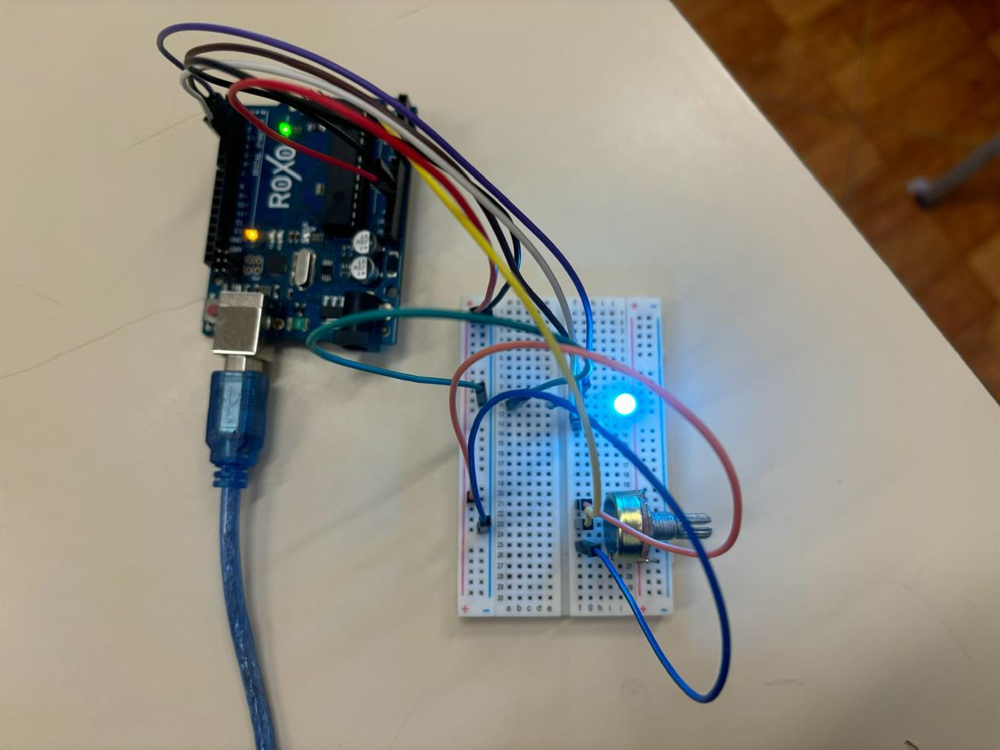
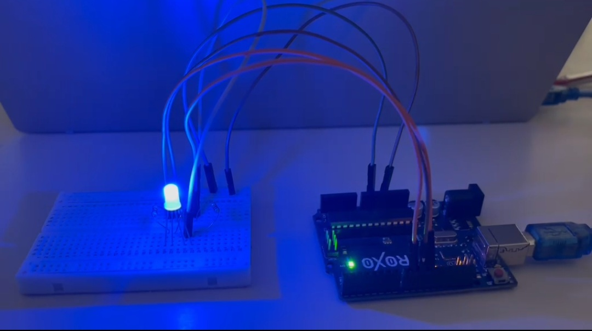

Projetos Desenvolvidos
Nesta página estão reunidos os projetos desenvolvidos pelo nosso grupo durante o IFA, utilizando a Robótica Educacional para desenvolver soluções voltadas à acessibilidade.

Efeito Fade-In e Fade-Out
Projeto utilizando Arduino UNO para demonstrar o efeito Fade-In e Fade-Out em um LED através da modulação PWM e sua aplicação na acessibilidade visual.
Saiba mais
Disco de Newton
Projeto desenvolvido para demonstrar que a luz branca é composta por diferentes cores. Utilizando um disco com as cores do espectro visível, o experimento mostra que, ao girar rapidamente, as cores se combinam devido à persistência da visão, fazendo o disco aparentar a cor branca ou acinzentada.
Saiba mais
LED RGB para Sinalização
Projeto desenvolvido utilizando Arduino UNO para demonstrar o funcionamento de um LED RGB, componente capaz de emitir diferentes cores através da combinação das cores vermelho, verde e azul (RGB). A intensidade de cada cor é controlada individualmente por meio da modulação por largura de pulso (PWM), permitindo a criação de diversas combinações de cores.
Saiba mais
LED RGB
Projeto desenvolvido utilizando Arduino UNO para demonstrar um sistema de sinalização com LED RGB. O circuito alterna automaticamente entre as cores vermelha e azul, simulando um dispositivo de alerta visual. A troca das cores é realizada por meio do controle independente dos canais do LED RGB, utilizando modulação por largura de pulso (PWM), proporcionando uma sinalização simples e eficiente.
Saiba mais
Arco Íris com LED RGB
Este projeto utiliza um Arduino UNO e um LED RGB para criar diferentes combinações de cores, por meio da variação de um potenciômetro. As cores são formadas pela mistura das luzes vermelha, verde e azul, permitindo produzir várias tonalidades.
Saiba mais
Relógio Visual por Cores com LED RGB
O Relógio Visual por Cores utiliza um LED RGB para representar os períodos do dia por meio de cores, facilitando a identificação da manhã, tarde e noite. Essa abordagem torna a informação mais intuitiva e acessível, especialmente para pessoas que possuem dificuldade em interpretar relógios convencionais..
Saiba mais